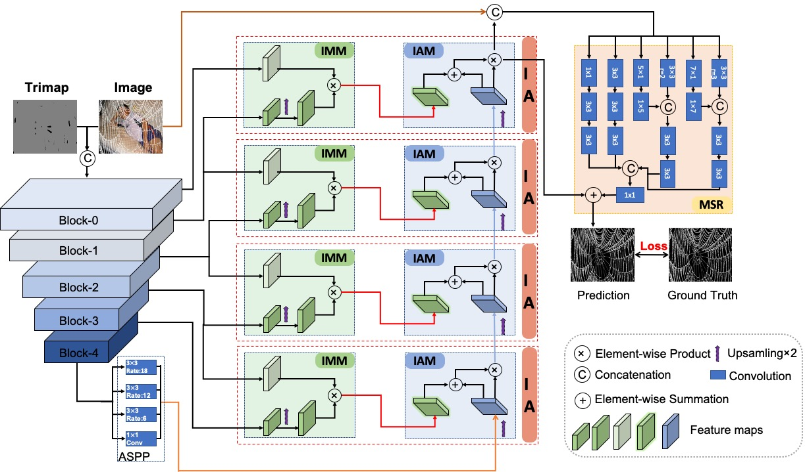

|
|
TIMI-NEt: Tripartite Information Mining and Integration for Image Matting
Yuhao Liu*, Jiake Xie*, Xiao Shi, Yu Qiao, Yujie Huang, Yong Tang and Xin Yang In Proc. IEEE International Conference on Computer Vision (ICCV), Montreal, Canada, Oct 11-17, 2021.
[Project]
[PDF
[Supp]
[BibTeX]
(Top 3 conference in Computer Vision, acceptance rate: 25.9%)
|
|
 |
Prior-Induced Information Alignment for Image Matting
Yuhao Liu*, Jiake Xie*, Yu Qiao, Yu Qiao, Yong Tang and Xin Yang IEEE Transactions on Multimedia (T-MM), 2021. |